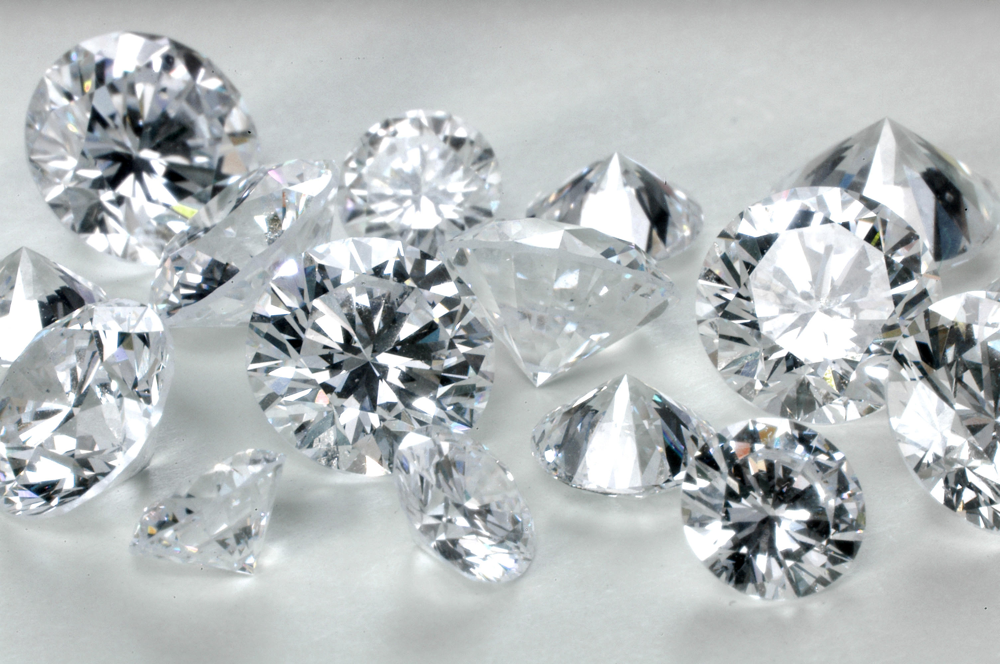
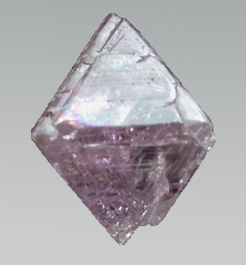

Rubies, sapphires and emeralds are all more rare than diamonds. Rubies and sapphires are actually the same mineral -corundum. The basic chemical formula of corundum is Al2O3, but traces of iron stain the mineral red (ruby) while traces of chromium or titanium stain the mineral blue (sapphire).
Natural chalk is actually made up of millions of little fossils called cocoliths which were the round shell of animal called cocolithophores
A diamond is the hardest naturally occurring material known, due to its strong covalent bonding, Yet, due to important structural weaknesses, diamond's toughness is only fair to good.Diamond is extremely strong owing to the structure of its carbon atoms, where each carbon atom has four neighbors joined to it with covalent bonds.
Not all diamonds are transparent. They come in a variety of colors (called fancies), including yellow, green, blue, orange, brown (champagne), purple, grey, black (called carbanado, recently shown to be meteroic), milky white, pink, and red. Red is by far the rarest.
This is an exmaple of a pink, non-transparent diamond in raw form
Quartz is the most common mineral on Earth. Nearly all the sand in sandstone, in the deserts of the world and on its riverbeds and beaches is quartz.
Flint is thought to be re-crystallised silica from sea sponges from the Cretaceous period
Scoria is a dark-colored igneous rock with abundant round bubble-like cavities called vesicles. It ranges in color from black or dark gray to deep reddish brown. Small pieces look like the ash produced in a coal furnace resulting in particles of scoria being called "cinders" and the small volcanoes that erupt scoria to be called "cinder cones"
Sand is basically the material you get when you get a breakdown in rocks, when the rocks weather and decompose over hundreds of thousands and millions of years and yet it's much more.
The largest crater on Earth is over 500km (or 311 miles) wide, partly located beneath Mexico. It was created following an asteroid impact 65 million years ago that may have led to the extinction of the dinosaurs.
Why doesn't the earth have as many craters as the moon? And the answer to that, is we do. However, our craters have gradually eroded away or been overgrown by vegetation.
On the slopes of Mount Kilimanjaro, at c9,000 feet (2,800 metres) the only animals around Kilimanjaro are moles, rats and birds of prey. At higher altitudes there is just the odd spider that can reach the summit and survive the freezing temperatures!
This giant mountain in East Africa is actually a dormant volcano. It is 19,340 feet (5,895 metres) high at the peak.
California's Sutter Buttes are the remnants of a volcano that was active approximately 1.6 million to 1.4 million years ago during the Pleistocene Epoch and are sometimes called the "smallest mountain range in the world."
They are large volcanic craters that form by two different methods. Learn how they form and where to find them including the one that created the world's largest volcanic lake.
Mauna Kea is over 10,000 meters tall compared to 8,848 meters for Mount Everest - making it the "world's tallest mountain". Mauna Kea has an altitude of 4,205 meters, Mauna Kea is an island and if the distance from the bottom of the nearby Pacific Ocean floor to the peak of the island is measure
The peak of Mount Everest is 8,850 meters (29,035 feet) above sea level. No other mountain on Earth has a higher altitude. Mount Everest is called the world's highest mountain because it has the highest elevation above sea level.
The average newborn infant will need a lifetime supply of 800 pounds of lead, 750 pounds of zinc, 1,500 pounds of copper, 3,593 pounds of aluminum, 32,700 pounds of iron, 26,550 pounds of clays, 28,213 pounds of salt, and 1,238,101 pounds of stone, sand, gravel, and cement.
Holiday lights are made with minerals from around the world. Cobalt oxide, sulfur, and cadmium sulfide are all found in your typical set of lights.
Geodes form inside already existing hollows within volcanic or sedimentary rock. Groundwater laden with silica and other minerals fills these hollows. Over thousands of years minerals precipitate out of the water, leaving a silica gel on the interior walls of the cavity that hardens into rock as it dries. As this process reoccurs, through leaching, layers begin to form distinct, inwardly pointing crystals. Geodes that are empty missed these later cycles.
There are roughly 3,000 known minerals, although only about 200 are of major importance. Approximately 50-100 new minerals are described each year.